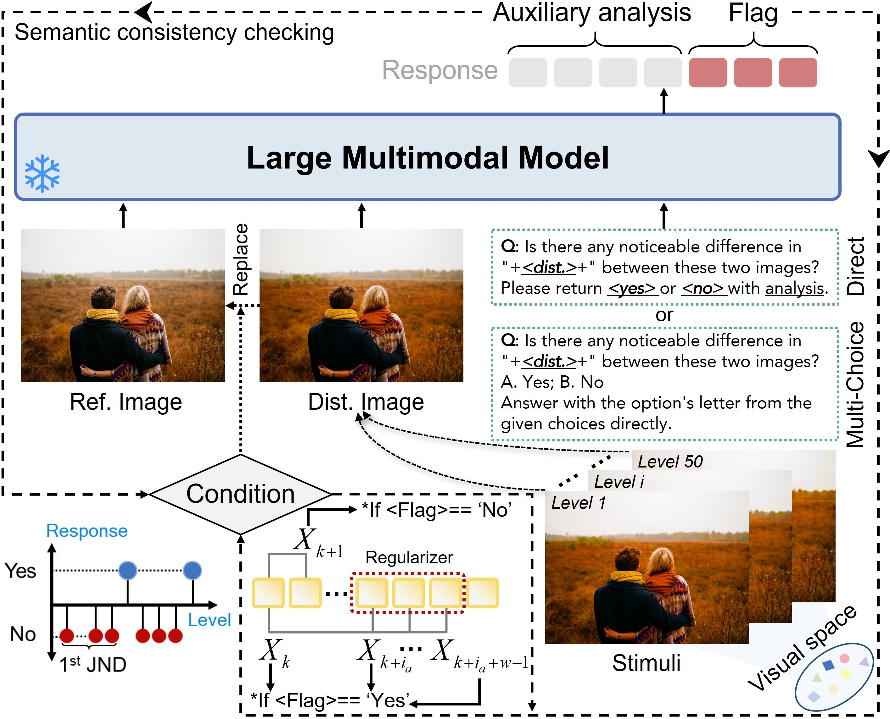

1Shanghai Jiao Tong University, 2Shanghai AI Laboratory, 3East China Normal University, 4Nanyang Technological University
Arxiv 2025
Overview: With the wide adoption of generative AI and rapid growth of high-quality video
generation, video guardrails have become more crucial than ever to ensure safety
and security across platforms. We introduce SafeWatch, an efficient MLLM-based video guardrail
model designed to follow customized safety policies and provide multi-label video guardrail outputs with content-specific explanations. Specifically, SafeWatch incorporates two powerful modules to tackle the high inference latency and policy bias under lengthy safety guidelines input, ensuring a focused, policy-compliant
guardrail with significantly reduced computational overhead. In addition, we introduce SafeWatch-Bench, a large-scale high-quality video guardrail dataset covering over 30 comprehensive unsafe video scenarios for training and benchmark our model.
SafeWatch Video Guardrail
(1) Strong policy-following to provide multi-label guardrail flags with precise explanations.
(2) Novel Architecture for achieving low infer- ence latency and mitigating policy input bias.
(3) Advanced Training for accurate guardrail and grounded explanation for both real-world and generative videos.
📊 VPA-JND Dataset
(1) Large & High-quality: Contain 2M+ videos annotated in high quality by multi-agent LLMs;
(2) Comprehensive Coverage: Cover 6 policy categories and over 30 safety-related scenarios;
(3) Real-world and GenAI: Cover challenging videos produced in both real-world settings and various generative models.
🎯 Comprehensive Evaluation
(1) SafeWatch-Bench: On both real-world and generative video subset, SafeWatch outperforms SOTAs by 29.2% and 27.2% on average;
(3) Unseen Tasks: On 8 new video categories or prompting tasks, SafeWatch has high accuracy.
VPA-JND Dataset
VPA-JND is a large-scale, high-quality video safety dataset with 2M+ videos covering six comprehensive safety categories: (1) Sexual Content, (2) Harassment & Bullying, (3) Threats, Violence & Harm, (4) False & Deceptive Information, (5) Illegal Activities, and (6) Hateful Content & Extremism. Each category is further divided into multiple fine-grained risk subcategories to address diverse safety scenarios.
The dataset features two distinct subsets: • Real-World Subset: Curated from diverse online sources including social media platforms and existing datasets. To ensure comprehensive coverage and challenge, we:
(1) Collect videos from diverse sources (e.g., short videos, livestreams, and films), covering a range of content types, lengths, and scenarios to maximize diversity;
(2) Maintain balanced demographic representation by collecting from diverse user groups;
(3) Include challenging benign examples (borderline-safe videos) to maintain low false positive rate and improve model robustness.
• Generative Subset: Features high-quality unsafe videos generated by SOTA models:
(1) Text-to-Video: generated using curated unsafe prompts from SafeWatch-Bench-Real captions and existing unsafe prompt datasets (e.g. I2P);
(2) Image-to-Video: generated from SafeWatch-Bench-Real screenshots and existing unsafe image datasets;
(3) Significantly higher quality and better alignment with sophisticated unsafe scenarios compared to existing datasets. Annotation: Each video is annotated with multi-label guardrail flags and in-depth explanations through our multi-agent propose-discuss consensus pipeline, ensuring comprehensive coverage while maintaining exceptional annotation quality.
SafeWatch Model Architecture

The decoding pipeline of SafeWatch. Regarding video input (left), SafeWatch leverages a segmentation model to process the input video into clips based on unsafe events. Then, it samples frames from each event and encodes them into patch tokens. Regarding safety guidelines (right), SafeWatch encodes each policy in parallel with the equivalent RoPE embedding to ensure they are treated with equal importance. Then, for each policy, SafeWatch calculates the relevance score based on its cross-attention with the video tokens and then activates Top-k most informative tokens and prunes the rest. Finally, these tokens are concatenated with the query for decoding.
Data Curation and Training Pipeline
An overview of SafeWatch. During data curation (top), we annotate each video in SafeWatch-Bench with high-quality multi-label guardrail and explanation via a multi-agent propose-discuss consensus pipeline, i.e., we guide multiple MLLMs to iteratively improve their annotation for each video frame to reach consensus with each other. During training (bottom-left), SafeWatch distills knowledge from SafeWatch-Bench via three consecutive training stages to improve 1) the overall guardrail performance, 2) the adaptability to visual token pruning, and 3) the quality of explanation, separately. During inference (bottom-right), SafeWatch judges videos for safety alignment with a customized policy providing a description, guardrail, and explanation.
⚠️ Content Warning
Warning: The content you are about to view may be sensitive. Do you wish to proceed?
📢 Dataset Notice
The dataset will be released under certain conditions and legal regulations. Stay tuned!
📢 Demo Notice
We will host SafeWatch model online for you to try on HuggingFace Space soon! Feel free to play with some demos on this page first! Stay tuned!
Main Results
Experiment Setup
Baselines. Open-source: (1) most recent models specifically designed for guardrail tasks, i.e., LlavaGuard-34B, Holmes-VAD, and LLamaGuard3V-11B. (2) two powerful pre-trained MLLMs, i.e., InternVL2-8B and InternVL2-26B. Closed-source: the most advanced models available: GPT-4o, Gemini-1.5 Pro, and the Azure Video Content Moderation API.
Datasets. We evaluate and compare these guardrail models on (1) the high-quality test set of SAFEWATCH-BENCH-Real (830) and SAFEWATCH-BENCH-GenAI (590), covering both real-world and generative videos of six safety categories over 30 scenarios (2) Splits of five existing datasets, i.e., LSPD, XD-Violence, UCF, Fake-SV, FVC. (3) Generalizability to new policy categories: three unseen tasks during training, including children's safety, firearms, and road accidents.
Metrics. (1) Safety grounding, which denotes the ability to identify the correct policy violation in the video. This is measured by the accuracy (averaged per-category and per-split), F1 Score for multi-label prediction, and AUPRC by framing the guardrail task as a binary classification problem. (2) Explanation quality, which denotes the correctness and policy adherence of the guardrail explanations. We consider both GPT-4o as a judge and human evaluators, where we provide them with the video and the ground-truth response, and ask them to provide a rating ranging from 0 to 10. (3) Inference latency, which is measured by the average time (in seconds) between sending the guardrail request and receiving the response.
Overall Performance Comparison
Performance comparison of SafeWatch with various video guardrail baselines on
SafeWatch-Bench-Real. We report the individual accuracy for each category, along with average accuracy (ACC) and F1 Score across all categories. AUPRC is calculated over binary guardrail
outputs. Explanations are rated on a numerical scale of [0,10] by both GPT-4o-as-judge and human
evaluators. Inference cost is measured by inference time per video. Best performance is in bold.
1st JND vs. Parameter Ratio (L/V)
1st JND versus the parameter ratio of the language backbone (Param.L) to the visual backbone (Param.V). The red dotted curves show the fitted optimization direction of the perception granularity for large models (72B/78B).
Beyond Visual Signals and with Other Modalities
Illustration of different textual attacks and the response change ratio w.r.t. the perturbation level. The image placeholders are excluded in counting the characters and words.
BibTeX
@article{chen2025just,
title={Just Noticeable Difference for Large Multimodal Models},
author={Zijian Chen and Yuan Tian and Yuze Sun and Wei Sun and Zicheng Zhang and Weisi Lin and Guangtao Zhai and Wenjun Zhang},
journal={arXiv preprint arXiv:2507.00490},
year={2025}
}